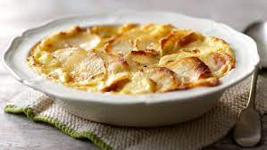

Dauphinoise Potatoes

About this dish
For what seems like an extremely boring dish, these daulphinoise potatoes will leave you pleasently suprised.
Layer on layer of perfectly cooked melt in your mouth potatoes covered in a delicious creamy topping. I dont have to much to say about this one I'll let you decide!
Ingredients
- 120g potatoes
- 1/2 clove garlic
- 35ml double cream
- 35ml milk
- butter
- salt & black pepper
Steps
- Preheat oven to 150c
- Butter a gratin dish
- Peel the potatoes and then slice very thinly. Then arrange a layer of potatoes in the gratin dish, a sprinkling of crushed garlic, pepper and salt. Repeat
- Mix the cream and milk together and pour it over the potatoes. Fleck the butter over the top and bake on the highest shelf in the oven for 1-1.5 hours